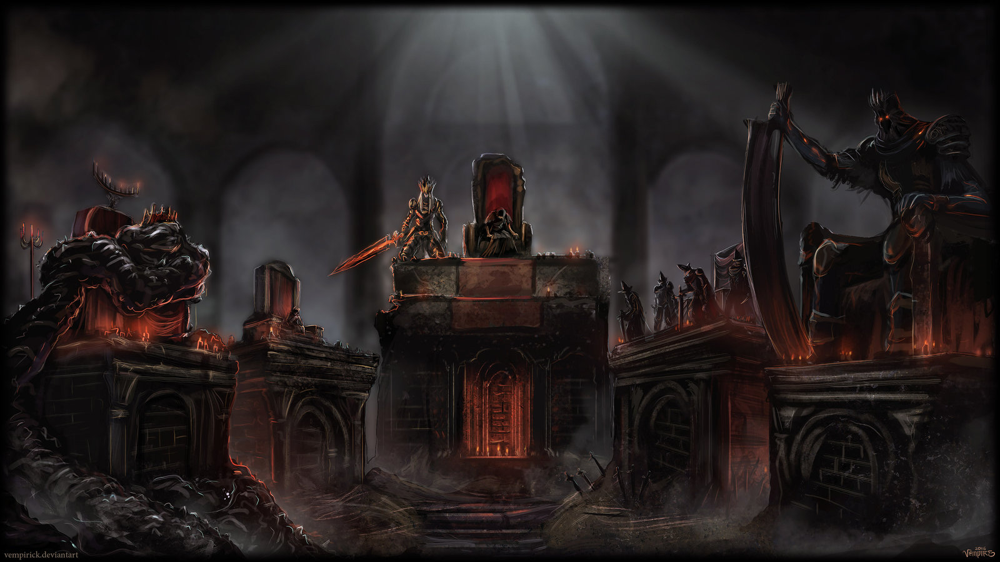
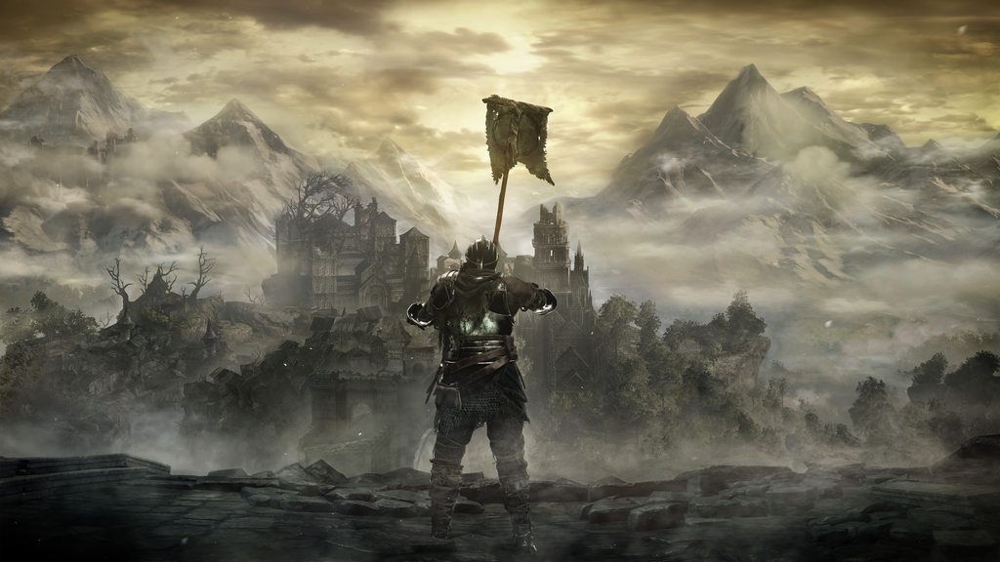
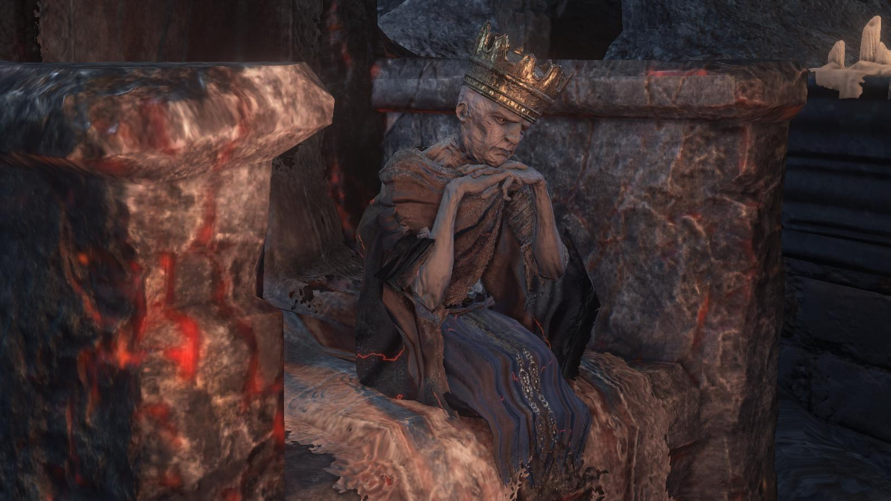
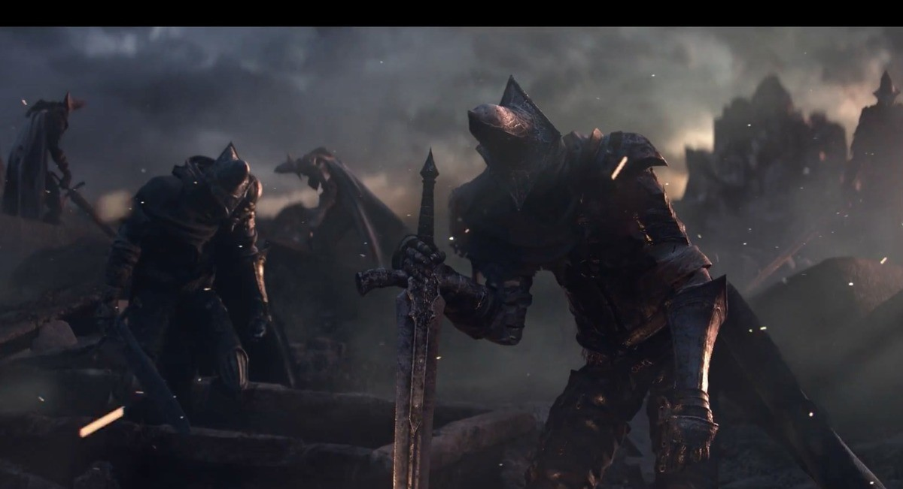
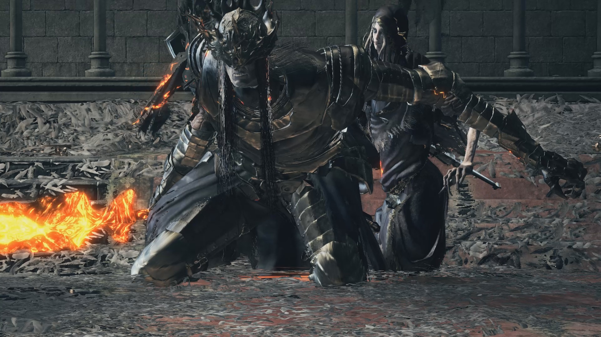
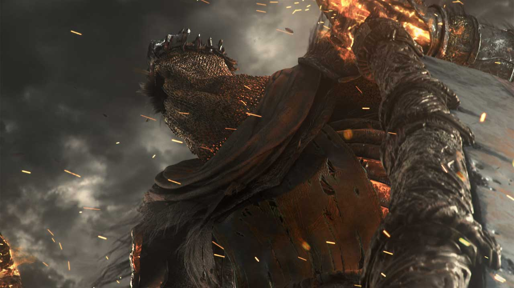

Echoes From Firelink
A simplisitc fan made Dark Souls 3 resource site
Lore
The Lords of Cinder
If the lords will not return to their thrones themselves,
let them return as cinders.
One becomes a Lord of Cinder by relinking the First Flame
in the Kiln and Surviving. There are currently 5 Lords of
Cinder, all 5 of their ashes are needed to reenact the
Linking of the First Flame. The 5 Lords are Aldrich Saint
of the Deep, Ludleth the Exiled, Yhorm the Giant, Farron's
Undead Legion, and Lothric, the Last hope of his line.
The Unkindled, Ashen One
Only in truth the lords will abandon their
thrones and the unkindled will rise. Nameless accursed undead,
unfit even to be cinder. And so it is, that ash seeketh embers.
As the intro says, the Unkindled are beings of ash,
unworthy to ascend to become Lords of Cinder.
They are awakened by the tolling of a Bell that
rings when the First Flame is in danger of fading.
They awaken in the Cemetery of Ash and seek the embers
of the First Flame. During the whole game the
protagonist is called Unkindled, Champion of Ash or Ashen
One all of which harken back to the origins of the unkindled.
Whatever unkindled are, their task is clear. They have
to seek out the Lords Of Cinderin order to reenact relinking
the First Flame and preserve the age of fire. They are also
undead who are not fully bound by the hollowing process we saw in
past games, needing to acquire Dark Sigils in order to go Hollow.
Ludleth the Exiled
Ludleth the Exiled linked the First Flame long ago by willing himself to.
Aldrich, Saint of the Deep

Aldrich is another Lord of Cinder that neglected his duties, having his
own ambitions after the linking of the fire. He was a cleric in
the past but at some point he started eating human flesh, and he
sure enjoyed it.
In any case, he devoured some Gods and linked the fire,
then his body of cinder was took to the tomb. When he
awakened he marched from the Cathedral to Anor Londo
to have a gift from Sullyvan, Gwyndolin. It is possible
that when we fight him he is still devouring the god
of the darkmoon, since we still see part of him. If
this is right the it means that Priscilla is alive,
since he had a dream about her while devouring Gwyndolin.
Farrons Undead Legion
Farron's Undead Legion of Abyss Watchers partook
of the blood of an ancient wolf, the Wolf's blood
linked the Abyss watchers to their master, the
legendary Artorias of the Abyss. Emulating Artorias,
the Abyss Wachers guard against creatures from the
Abyss. The Abyss Watchers swore on their share Wolf's
blood to relink the Flame.
Lothric, the Last Hope
Lothric refused to relink the Flame, choosing
instead to allow the Flame to fade as he watched
it from a distance with his brother.
Yhorm the Giant
Yhorm the Giant sought to end the Profaned flame by
relinking the First Flame. Instead of Eliminating the
Profaned Flame, the capital burned killing all except Yhorm.
Pontif Sulyvahn travelled to the Profaned Capital and saw the
Profaned Flame. This hints that Yhorm linked
the Flame before Aldrich.